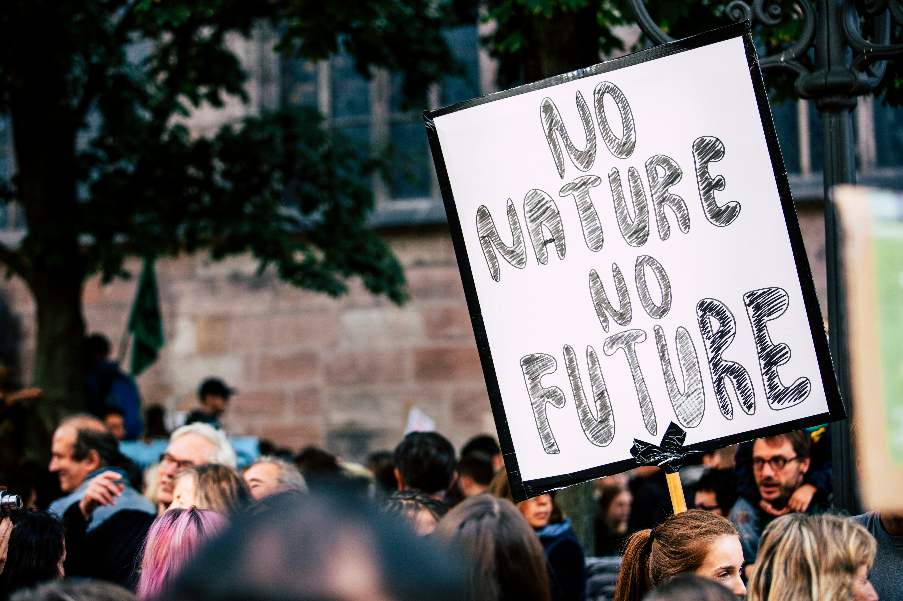

Definition
Global warming is the long-term increase in Earth's average surface temperature due to elevated levels of greenhouse gases, such as carbon dioxide, methane, and nitrous oxide, in the atmosphere. These gases primarily result from human activities, including the burning of fossil fuels, deforestation, and industrial processes. As these gases accumulate, they enhance the natural greenhouse effect, trapping more heat and causing significant changes to the climate. The consequences of global warming are far-reaching and affect many aspects of life on Earth. One of the most noticeable effects is the increase in the frequency and severity of weather events. For example, regions may experience more intense hurricanes, prolonged droughts, and heavier rainfall, leading to devastating floods. These extreme weather patterns disrupt not only human communities but also wildlife habitats, putting countless species at risk and leading to a decline in biodiversity. Moreover, global warming is causing sea levels to rise as polar ice caps and glaciers melt. This rise threatens coastal areas, leading to erosion, habitat loss, and increased flooding, which can displace populations and impact economies. Efforts to combat global warming focus on reducing greenhouse gas emissions and promoting sustainable practices. Transitioning to renewable energy sources, such as solar and wind power, is crucial in lowering our carbon footprint. Additionally, reforestation and sustainable agricultural practices can help absorb carbon dioxide from the atmosphere, contributing to climate mitigation. By raising awareness and encouraging individual and collective action, we can work towards a healthier planet. Understanding the causes and impacts of global warming is essential for fostering a sustainable future for all living beings on Earth.